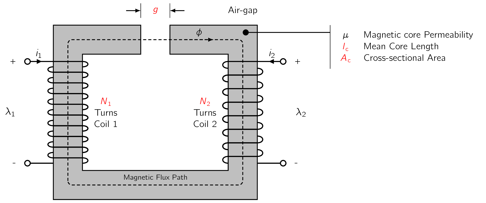

When a magnetic field varies with time, an electric field is produced in space as per Faraday’s [13] [13]Michael Faraday
(
[13]Michael Faraday
(
| (1.21) |
Eq. (1.22) states:
The line integral of the electric field intensity () around a closed contour () is equal to the time rate of change of the magnetic flux linking, passing through, that contour.
In magnetic structures with windings of high electrical conductivity, such as in Fig. 1.2, it can be shown, the field in the wire is extremely small and can be neglected, so that the LHSLeft Hand SideLeft Hand Side of Eq. (1.22) reduces to the negative of the induced voltage () at the winding terminals. In addition, the flux on the RHSRight Hand SideRight Hand Side of Eq. (1.22) is dominated by the core flux . Since the winding, and therefore the contour , links the core flux times, Eq. (1.22) reduces to:
| (1.22) |
where is the flux linkage of the winding and is defined as:
| (1.23) |
Flux linkage is measured in units of
(or equivalently ).
The symbol
is used to indicate the instantaneous value of a time-varying flux. In general the flux linkage of a coil
is equal to the
Direction of the induced voltage ()
is defined by Eq. (1.22) so if the winding terminals were
For a magnetic circuit composed of magnetic material of constant magnetic permeability or which includes a dominating air gap, the relationship between and will be linear and we can define the inductance as:
| (1.24) |
Substitution of Eq. (1.5) , Eq. (1.18) and Eq. (1.23) into Eq. (1.24) gives:
From which we see that the inductance of a winding in a magnetic circuit is proportional to the square of the turns and inversely proportional to the reluctance of the magnetic circuit associated with that winding.
As an example, from Eq. (1.20) , under the assumption that the reluctance of the core is negligible as compared to that of the air gap, the inductance of the winding in Fig. 1.2 is equal to
| (1.25) |
Inductance is measured in henrys [14] [14]Joseph Henry
(
[14]Joseph Henry
(
Eq. (1.25) shows the dimensional form of expressions for inductance;
Inductance is proportional to the square of the number of turns, to a magnetic permeability, and to a cross-sectional area and is inversely proportional to a length.
It must be emphasised that, strictly speaking, the concept of inductance requires a
However, for many situations of practical interest, the reluctance of the system is dominated by that of an air gap, which is of course linear, and the non-linear effects of the magnetic material can be ignored.
In other cases it may be perfectly acceptable to assume an average value of magnetic permeability for the core material and to calculate a corresponding average inductance which can be used for calculations of reasonable engineering accuracy.
Using Python, plot the inductance of the magnetic circuit given in (TutBook) Ex. ?? as a function of core permeability over the range .
The script for the plot is as follows:
#+begin_src python
import numpy as np
import matplotlib.pyplot as plt
mu0 = 4 * np.pi * 1e-7 # (H/m) permeability of free space
lc = 0.3 # (m) length
Ac = 9e-4 # (m2) cross-sectional area
Ag = 9e-4 # (m2) cross-sectional area
g = 5e-4 # (m) air gap length
N = 500 # (-) number of turns
Bc = 1 # (T) Core magnetic field density
Rel_g = (g) / (mu0 * Ag) # (Ampere-Turns/Weber) air-gap reluctance
mur = np.zeros(1000) # Relative Permeability emtpy array for looping
for i in range(len(mur)):
mur[i] = 100 + (100000 - 100) * (i - 1)/1000
Rel_c = (lc) / (mur * mu0 * Ac) # (Ampere-Turns/Weber) core reluctance
R_tot = Rel_c + Rel_g # (Ampere-Turns/Weber) total reluctance
L= N**2 / R_tot # (H) Inductance
# -- Plotting
plt.xlabel('Core Relative Permeability ($\mu_r$) [H/m]')
plt.ylabel('Inductance [H]')
plt.xlim(0, 0.8e5)
plt.ylim(0, 1)
plt.title("Core Relative Permeability vs. Inductance Graph", color='#c6d0f5')
plt.plot(mur, L,'#ef9f76', linewidth=5)
fig.tight_layout()
Please observe the resultant plot. The figure clearly confirms that, for the magnetic circuit of this example, the inductance is quite insensitive to relative permeability until the relative permeability drops to on the order of 1000. Therefore, as long as the effective relative permeability of the core is “large”, which in this case greater than 1000, any non-linearities in the properties of the core material will have little effect on the terminal properties of the inductor.

Fig. 1.4 shows a magnetic circuit with an air gap and two (
The total MMFMagneto-motive ForceThe magnetic pressure which drives magnetic flux in a magnetic circuit, and is the work done to move a unit magnetic pole. is therefore calculated to be:
| (1.26) |
and from Eq. (1.20) , with the reluctance of the core neglected and assuming , the core flux is:
| (1.27) |
In Eq. (1.27) , is the resultant core flux produced by the total MMFMagneto-motive ForceThe magnetic pressure which drives magnetic flux in a magnetic circuit, and is the work done to move a unit magnetic pole. of the two windings.
It is this resultant which determines the operating point of the core material.
If Eq. (1.27) is broken up into individual currents, the resultant flux linkages of coil 1 can be expressed as
| (1.28) |
which can be written in a simpler form as:
| (1.29) |
where:
| (1.30) |
is the
| (1.31) |
and is the flux linkage of coil 1 due to current in the other coil. Similarly, the flux linkage of coil 2 is
| (1.32) |
or
| (1.33) |
where is the mutual inductance and
| (1.34) |
is the self-inductance of coil 2.
It is important to note that the resolution of the resultant flux linkages into the components produced by and is based on superposition of the individual effects and therefore implies a linear flux-MMFMagneto-motive ForceThe magnetic pressure which drives magnetic flux in a magnetic circuit, and is the work done to move a unit magnetic pole. relationship. [16] characteristic of materials of constant permeability.
Substitution of Eq. (1.24) in Eq. (1.22) gives:
| (1.35) |
for a magnetic circuit with a single winding. For a static magnetic circuit, the inductance is fixed, [17] assuming that material non-linearities do not cause the inductance to vary and this equation reduces to the familiar circuit-theory form:
| (1.36) |
However, in electromechanical energy conversion devices, inductances are often time-varying, and Eq. (1.35) must be written as
| (1.37) |
Note that in situations with multiple windings, the total flux linkage of each winding must be used in
Eq.
(1.22)
to find the winding-terminal voltage. The power at the terminals of a winding on a magnetic
circuit is a measure of the rate of energy flow into the circuit through that particular winding. The
| (1.38) |
and its unit is watts (), or
(). Therefore, the change in
magnetic stored
| (1.39) |
In SI units, the magnetic stored energy is measured in joules (). For a single-winding system of constant inductance, the change in magnetic stored energy as the flux level is changed from to can be written as
| (1.40) |
The total magnetic stored energy at any given value of can be found from setting equal to zero:
| (1.41) |

Before their modern versions, motors using electrostatic forces were investigated. The first electric
motors were simple electrostatic devices described in experiments by